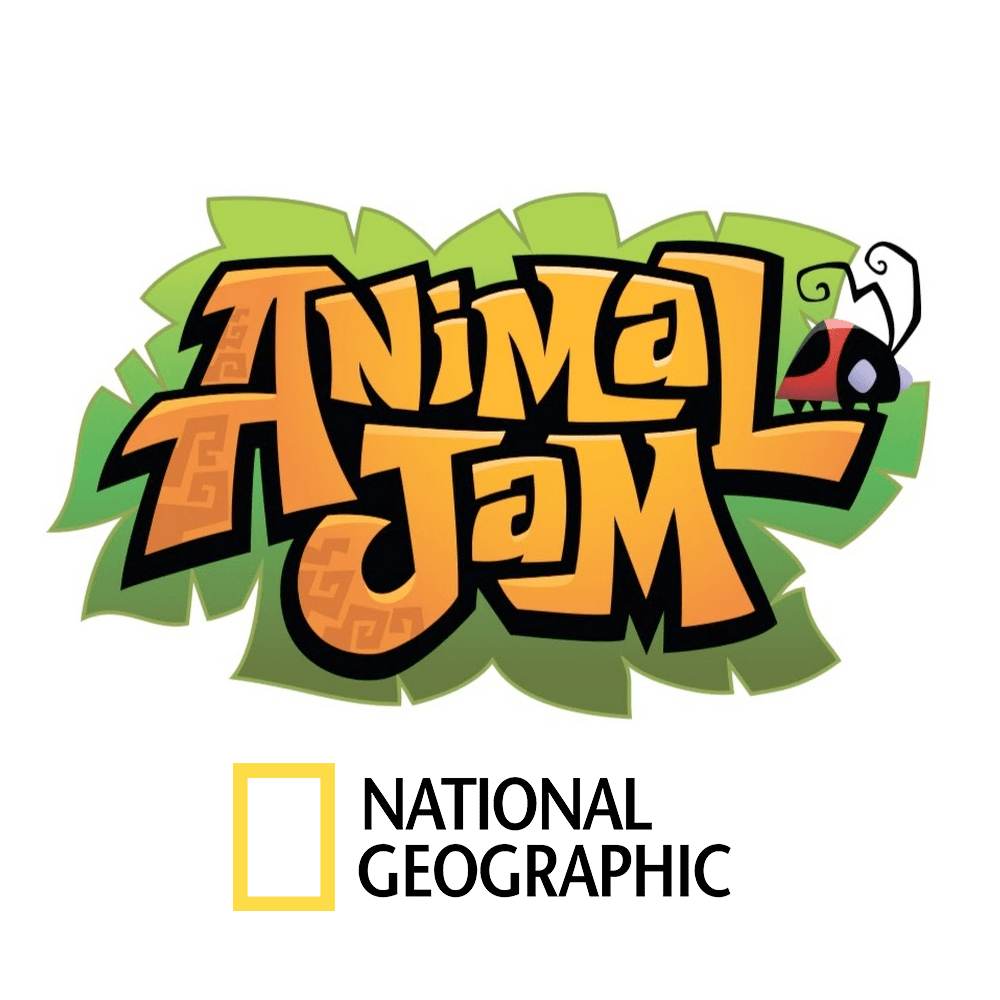
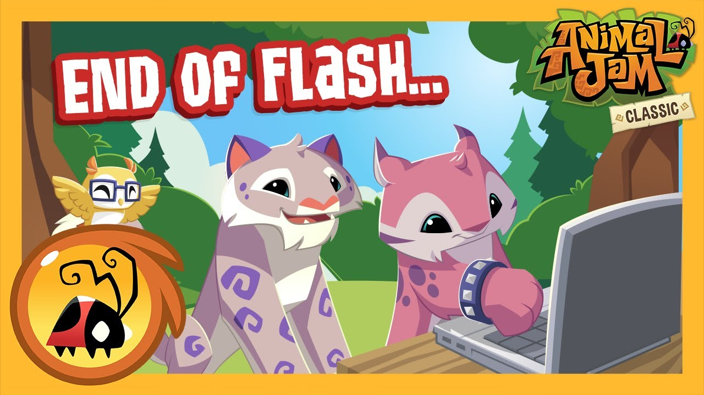
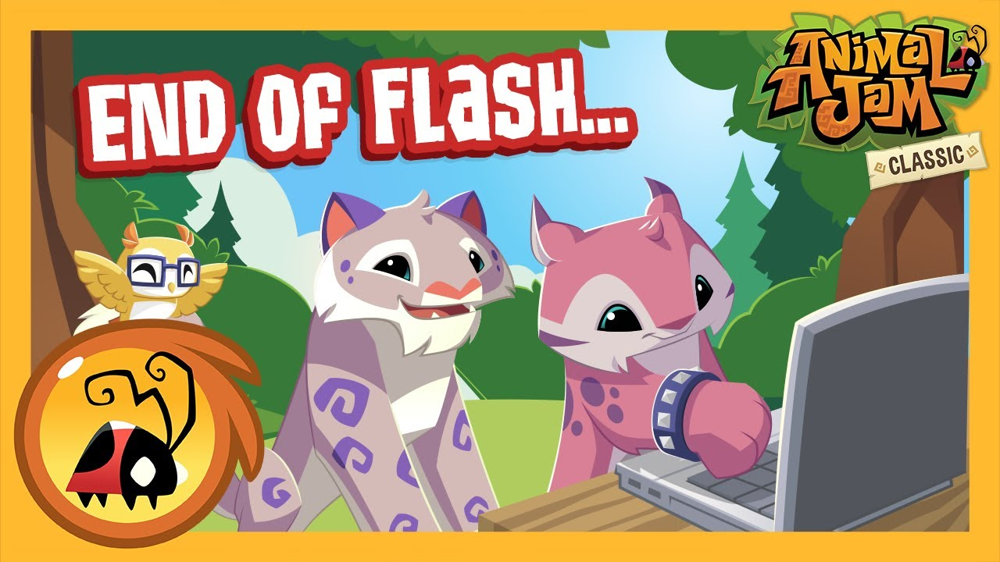

About Animal Vibes
This game was a memory-based remake of the early 2010s online game called
"Animal Jam".

Animal Jam is an online multiplayer game designed for children aged 7 to 14.
Developed by Wildworksin partnership with National Geographic, the game allows players to create and customize their own animal avatars, explore a vibrant virtual world, and engage in various educational activities.
Players can interact with each other in a safe and moderated environment, chat with friends, and team up to complete quests and challenges. The game's world, Jamaa, is divided into different themed areas, each representing different ecosystems, such as forests, deserts, and oceans.
In Animal Jam, players can adopt and care for virtual pets, decorate their dens, and participate in mini-games and puzzles to earn in-game currency and rewards. The game also features educational content about wildlife, conservation, and environmental awareness, with informative articles and videos provided by National Geographic.
Overall, Animal Jam offers a fun and educational experience for children, combining virtual gameplay with real-world learning about animals and nature in a safe online environment.
 

Animal Jam had to create an installer due to the discontinuation of Adobe Flash. Flash was a technology commonly used to run multimedia content, including games, animations, and interactive applications on the internet. However, Adobe announced that it would stop supporting and distributing Flash Player by the end of 2020 due to security vulnerabilities and the rise of more modern web technologies.
As a result, web-based games like Animal Jam that relied on Flash needed to find alternative solutions to continue operating. WildWorks, the developer of "Animal Jam," opted to create an installer for the game. This allowed players to download and install the game directly onto their devices, rather than accessing it through a web browser that previously relied on Flash technology.
By transitioning to an installer-based model, Animal Jam could ensure that players could continue enjoying the game without being dependent on Flash. This move also provided an opportunity for the developers to update and optimize the game for modern platforms and technologies, ensuring its continued availability and compatibility with evolving internet standards.